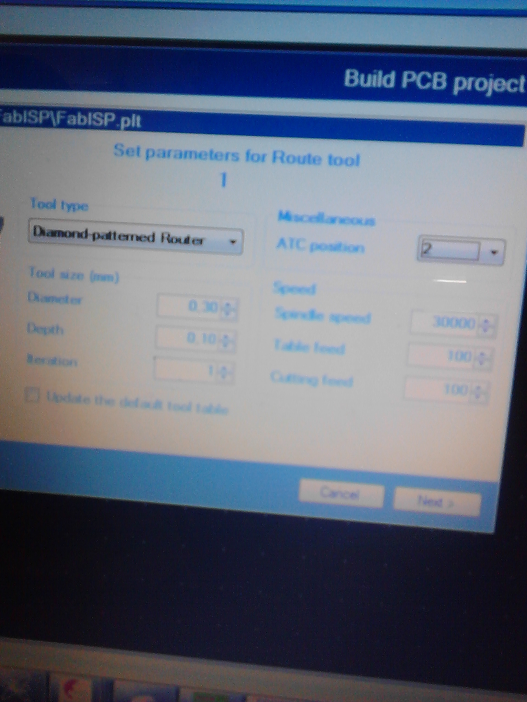
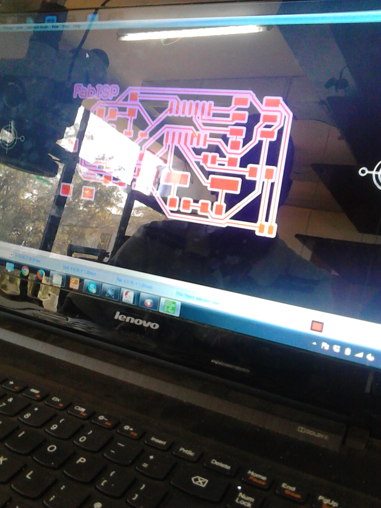
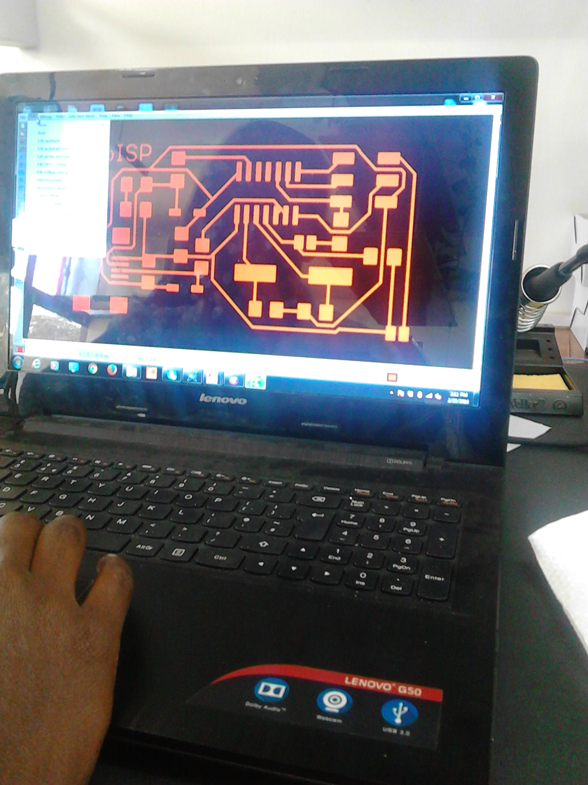

The files were downloaded from Fabisp here the files were in different formats of schematics and brd. Use Eagle to open them in ordr to create Gerber Files.



IsoCAM which reads Gerber and drill files. It is also used for convertion of data and editing. The data to be drilled is saved as .ne
From here, I proceeded to the Machine where, I fixed the the workpiece on top of the base (sacrificial board). Unfortunately the cello tate I was using was not sticky enoufg and the pcb was not so flat on the board. This was evident as some lines could be milled dipper compared to other.
Watch work in progress
After the milling, I brushed off the dusts and here is my finished board
Apart from Computer Controlled Milling of PCB, I opted to try the Etching also known as the (Wet Process) process to compare the results. Here, below were the processes;
Lessons learnt
On the second trial I followed all the processed above well but when it comes to settings, I did not get it correctly and realised that it was milling much dipper aand so I stopped the work from the comp to work on the settings. I did not remember to replace the test tools in their correct positions and chuck before restarting . This error became very expensive when our Test tool broke in the process